Projects
Below are some highlights of just a few projects I’ve been involved with over the last decade.
Measuring System States
Invasive species are typically easier to prevent than eradicate after colonization. The Lower MS River FWCO has implemented comprehensive monitoring and response for Invasive Carps in the Tennessee-Tombigbee Waterway. This hydrological system artificially connects to drainages and threatens ecosystems and recreational opportunities in the Mobile River Basin. Our initiative focuses on measuring system states to preemptively identify and mitigate the spread of an invasive species. Luckily, our efforts have yet to record invasive carps in the TTW, but by combining early detection with immediate action, we’re able to demonstrate our commitment to protecting natural resources through informed, responsive conservation actions.
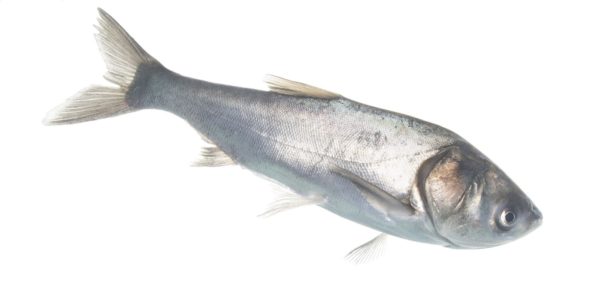
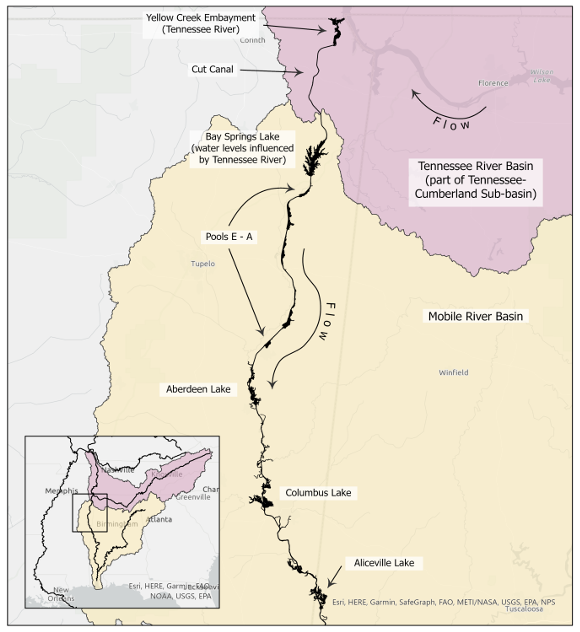
Species distribution models can provide biologits with insight into species ranges, ecological niches, and spatial predictions of suitable habitat, but require significant training, data, and time for biologists to obtain reliable results. Alternatively, ad hoc inferences from sparse occurrence records leave biologists to face conservation decisions with high uncertainty. We developed Simple Models to Quickly Estimate the Probable Range of Data-limited Fiverine Fishes. Simulations indicated that the probable range of a species can be predicted using simple occurrence records. These data-efficient, easy-to-use estimators can help biologists plan future surveys and bridge the gap between ad hoc inference and complex modeling over a range of scenarios. 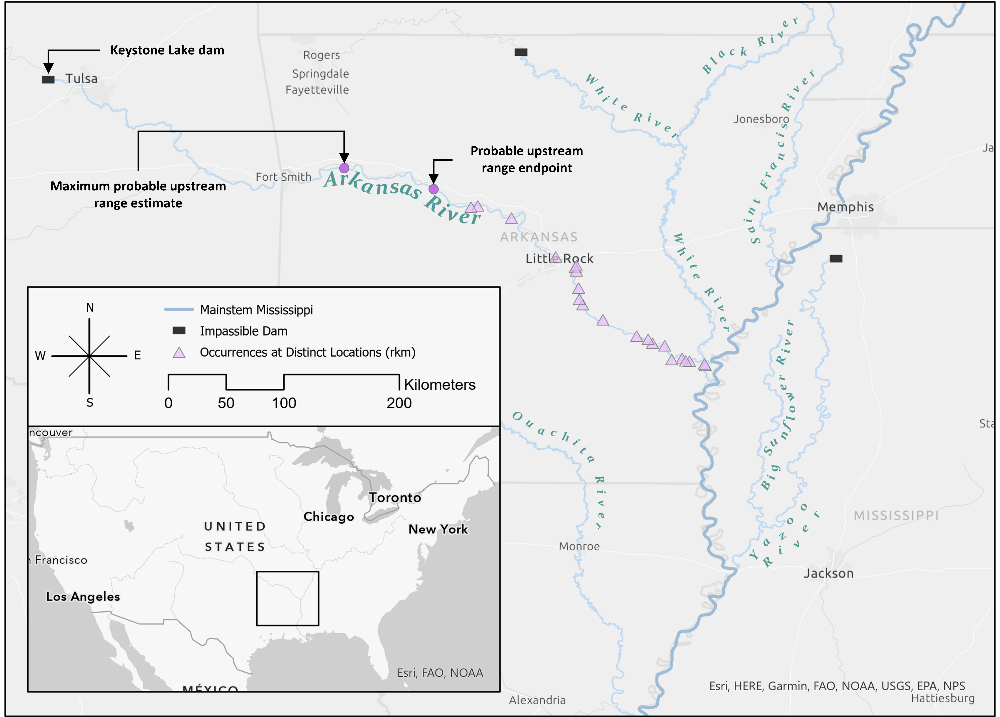 The “system state” is a general term that can include suitable habitat for species of interest. Measuring the condition or even location of habitat can be tricky and time consuming. We tackled this problem with a unique and rare habitat in Mississippi—sheer rock outcrops. Basic methods for Detecting Sheer Rock Outcrops Using Digital Elevation Models were established by Smith and Mullins (2022). However, while their methods effectively highlighted the contrast between slopes of sheer rock outcrops and adjacent gently sloping hillsides, it did not systematically compare sites that are completely devoid of sheer rock outcrops. But we did! On top of that, we streamlined the process and used freely available software so our results could be replicated and validated in new areas. Ultimately, our results bolstered findings in Smith and Mullins (2022) (always great to have multiple lines of evidence) and is helping support other researchers in the region leading surveys for rock outcrop specialists like the Green Salamander (Aneides aeneus).
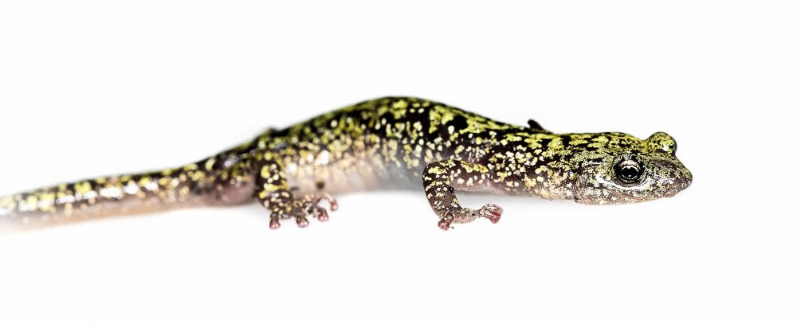 Green Salamander. Photo credit: Dave Huth. Cropped for webpage formatting (CC BY-NC 2.0 DEED).

Relating Human Values to System States
Like habitat and biodiversity loss, conservation is driven by human endeavors and values. Often our values are reflected in mission statements and strategic plans. We investigated, described, and spatio-temporally compared Contemporary Inland Fisheries Goals across 31 fisheries agencies. We identified nine distinct goal themes, but found that they do not form clear geographic patterns, which contrasts with a similar analysis conducted in the 1970s. Since that time, fisheries agencies’ goals have expanded and regionalism in goals has vanished. We think that changes in perspectives and communication technology, as well as provisions within federal funding, has led to goals becoming more homogenous across the U.S. and increased goal diversity within agencies. 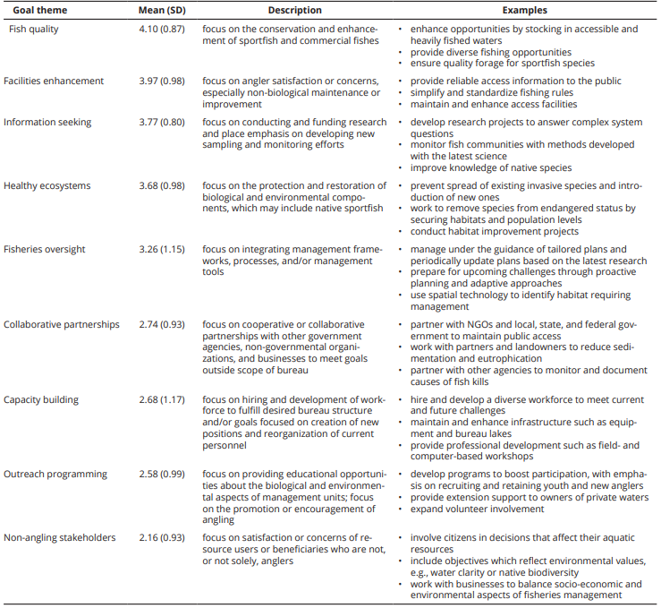 While goals within strategic plans help guide the mission of an organization, objectives within management plans help the rubber meet the road. But, writing good management objectives is often more difficult than we expect. There are countless plans that contain objectives that do not really clarify what is trying to be achieved. I suspect it has something to do with the underemphasis of management and decision sciences in university coursework and early career development and research objectives are perhaps the only types of objectives folks get exposed to. For clarity, in a recently accepted paper we state:
Research or analytical objectives are “active statement[s] about how the study [or analysis] is going to answer the specific research question[s]” (Farrugia et al., 2010). Management objectives, however, are “statements of the fundamental interests that could be affected by a decision—the ‘things that matter’ to people” or the things that have intrinsic social and cultural value (Gregory et al., 2012). Management actions and monitoring activities are often conflated with management objectives. For example, statements such as “better understand habitat effects on bobwhite quail reproduction” (research), “monitor water quality” (monitoring), or “develop crappie length limit recommendations” (management action) are not management objectives but describe activities that serve as means of achieving various ends (i.e., management objectives).
So how can we help?! We adapted Doran’s (1981) SMART criterion for natural resource and environmental management objectives and developed a Mad Libs^TM style template to help streamline and improve management objectives writing! 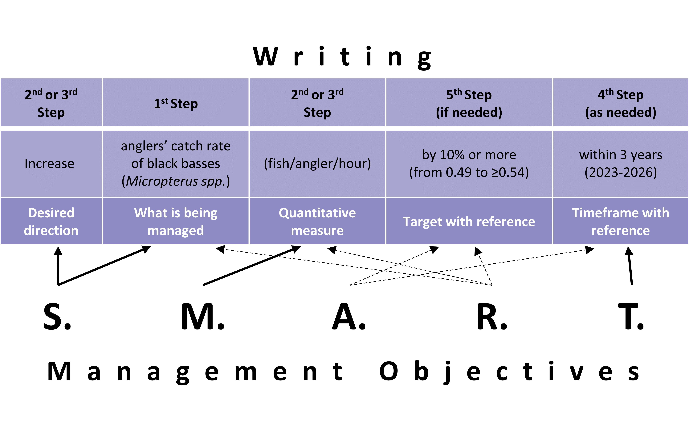
Finding Optimal Solutions and Decision Support
Decision-making in natural resources is complicated by multiple objectives (e.g., ecological and societal) and uncertainty in the system state, function, and response to management. Our work on brush piles in reservoirs demonstrates how enhancing and maintaining fish habitat can be done efficiently. We evaluated the longevity and structural changes of brush piles made from Eastern Red Cedar (Juniperus virginiana) and Bald Cypress (Taxodium distichum) in a drawdown reservoir, revealing a yearly loss and volume reduction that can better inform management strategies. This study, complemented by satellite imagery, offers insights into maintaining desirable brush densities and suggests that physical forces at installation sites influence brush pile durability. Our findings guide sustainable habitat management.
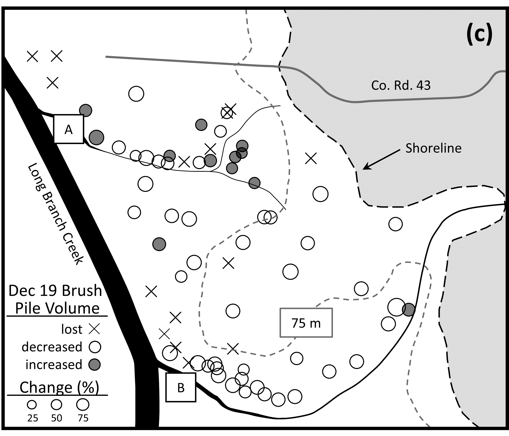
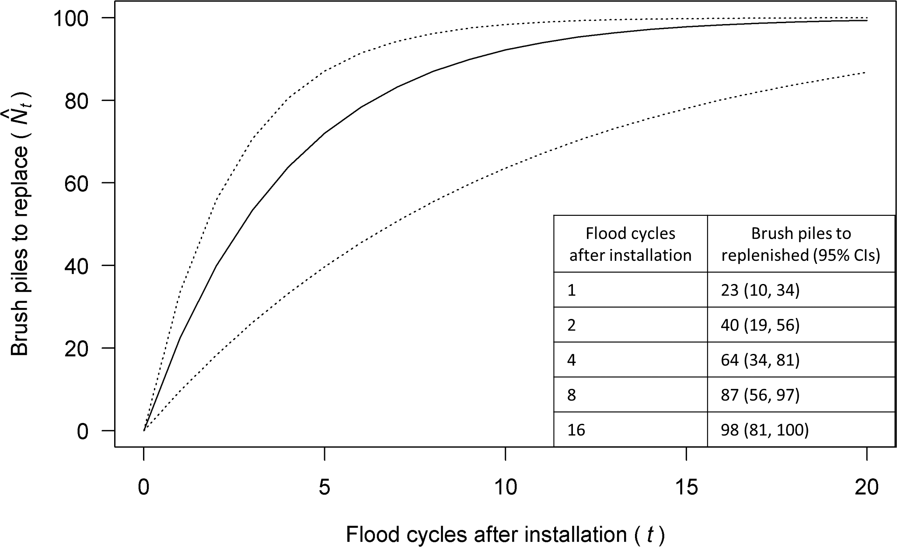
In a small-scale study of Mediterranean Gecko (Hemidactylus turcicus) occupancy study, we challenged common assumptions about species detection and habitat associations. By comparing models with and without perfect detection, we highlight the importance of considering detection probability in ecological studies. Our findings suggest that certain environmental and human factors influence the detection of Mediterranean Geckos, offering a nuanced understanding of their invasive potential. This work encourages more accurate approaches to studying species distribution and emphasizes the need for methodologies that account for imperfect detection, thus helping to improve and optimize sampling designs.
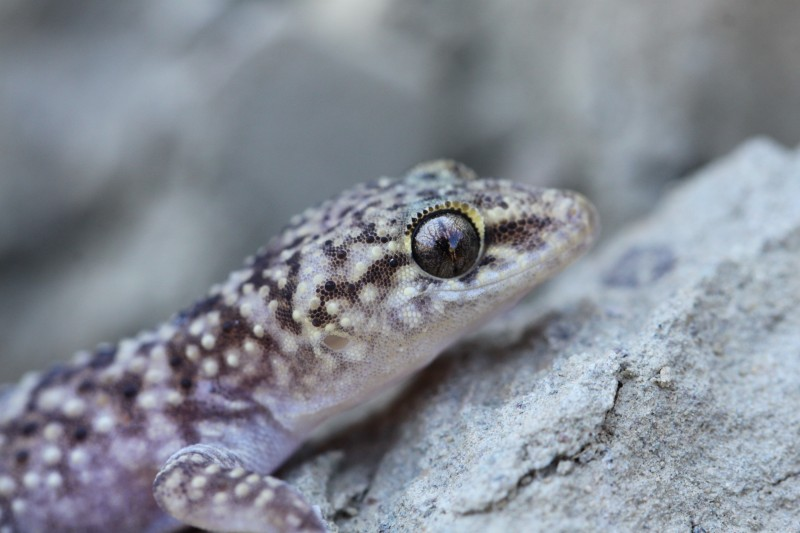
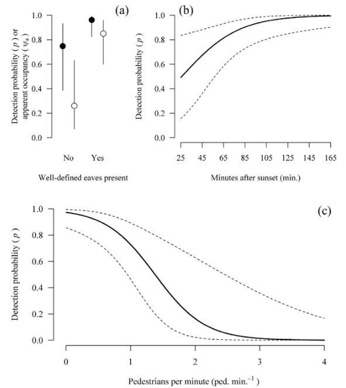
The TNCR-TTW 509 pilot project represents a groundbreaking approach to invasive carp management, utilizing a spatially explicit population model to identify optimal deterrent and removal strategies. Through simulation-optimization and genetic algorithms, we aim to minimize the invasive species’ abundance and distribution, showcasing an innovative use of technology in conservation efforts. This project exemplifies our dedication to finding effective, data-driven solutions to environmental challenges.
Hypothesis Testing and Adaptive Management
Exploring color variation in the Eastern Black Kingsnake (Lampropeltis nigra), we tested hypotheses on thermoregulation and crypsis. Our study across Mississippi suggests that temperature and forest cover significantly influence coloration, supporting the thermoregulation hypothesis. This research not only sheds light on the adaptive significance of color variation but also anticipates how climate change may affect species distributions and behaviors, emphasizing the need for adaptive management strategies in conservation.
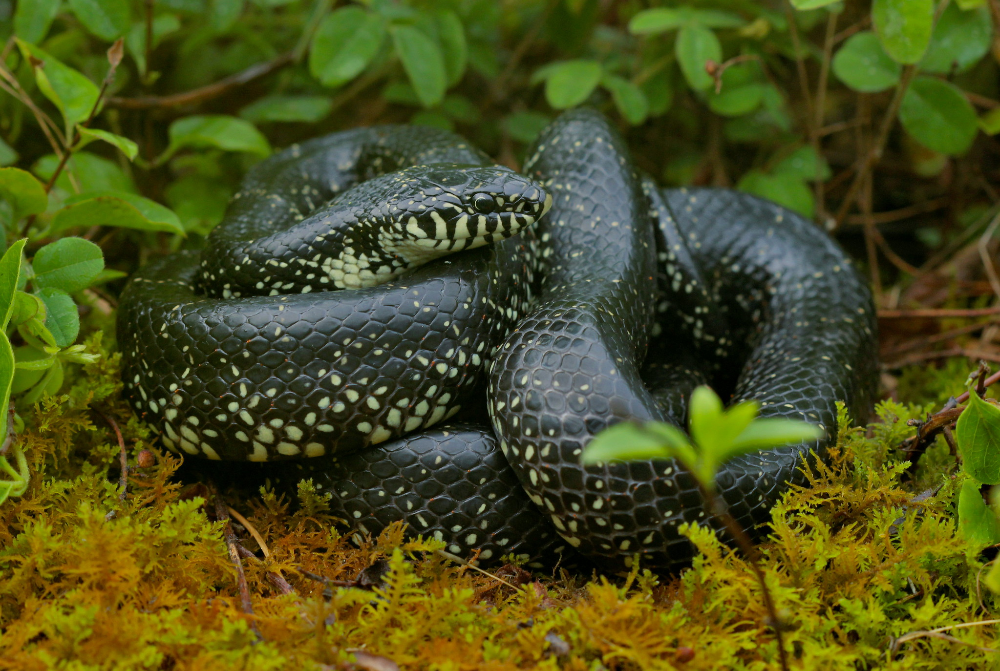 Eastern Black Kingsnake. Photo credit: Peter Paplanus (CC BY-NC 2.0 DEED).
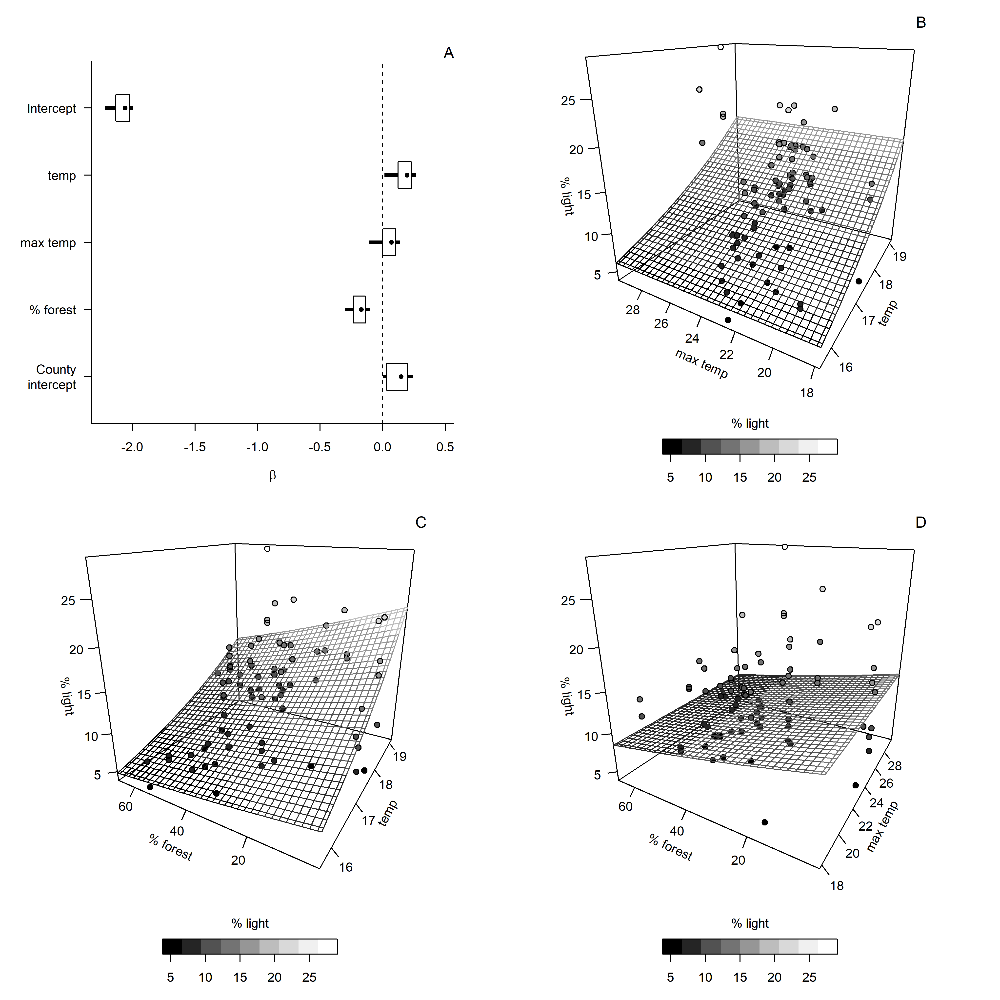 Relationships between percent of light coloration on scales and environmental variables.
Part of my dissertation research developed a prototype learning model to bridge the gap between management objectives, actions, and monitoring (assessment) of both biological and non-biological aspects of inland fisheries management. By identifying common management objectives and linking them with measurable attributes and actions, I developed a hierarchical framework to standardize decision-making for recurrent problems in fisheries management. Simulations suggest that leveraging information from similar systems can significantly reduce uncertainty, highlighting the efficiency of shared learning. This innovative framework emphasizes the importance of clear objectives, standardized methodologies, and adaptive management to improve fisheries management comprehensively.
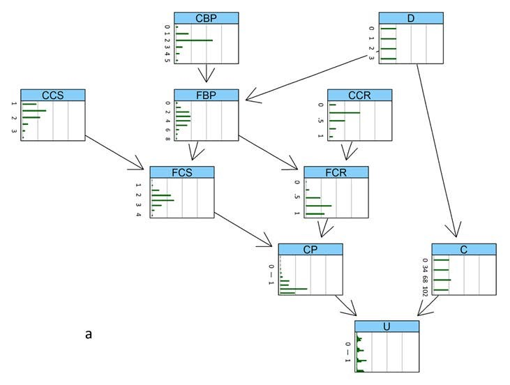
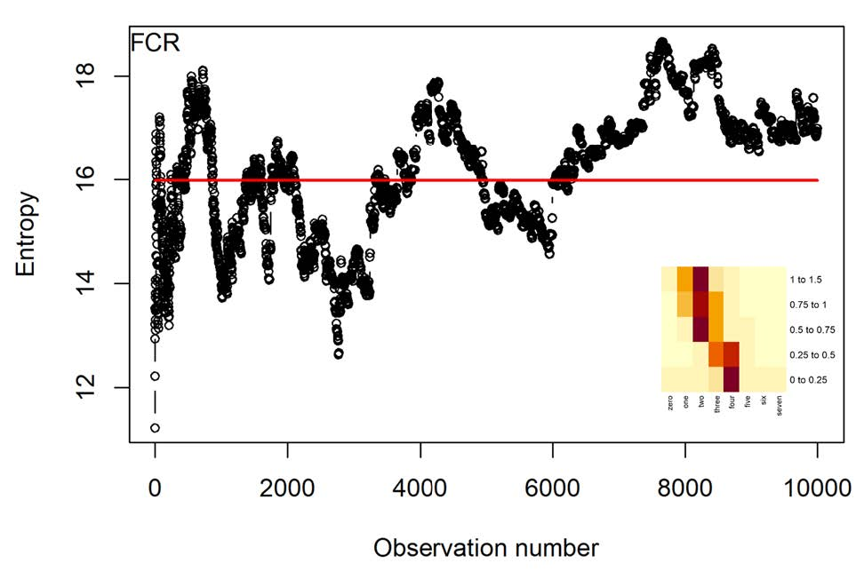